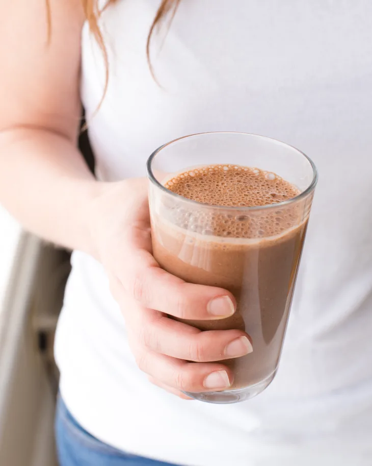

Vegan Chocolate-Date Smoothies

Description
By Kelli Foster, from The Kitchn
You’re an adult, so of course you can have chocolate for breakfast when you feel like it. But this is different because this is how to have chocolate for breakfast without it being a piece of cake. Every sip of this creamy smoothie — made with dates, bananas, and almond butter — tastes rich and satisfying, and you can count on its wholesome and nourishing ingredients to fill you up. -Kelli Foster
Ingredients
- 2 cups unsweetened nut milk
- 4 dried dates, pitted
- 2 medium frozen bananas
- 2 tablespoons unsweetened cocoa powder
- 2 tablespoons almond butter
- 1/4 teaspoon ground cinnamon
Steps
- Place the nut milk and dates in a blender and blend on high speed until smooth to break down the dates, about 30 seconds. Add the bananas, cocoa powder, almond butter, and cinnamon. Blend on high speed until completely smooth and creamy, about 45 seconds more.